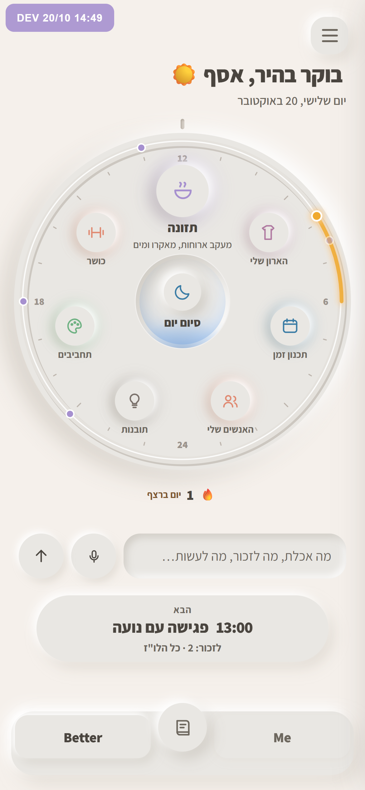
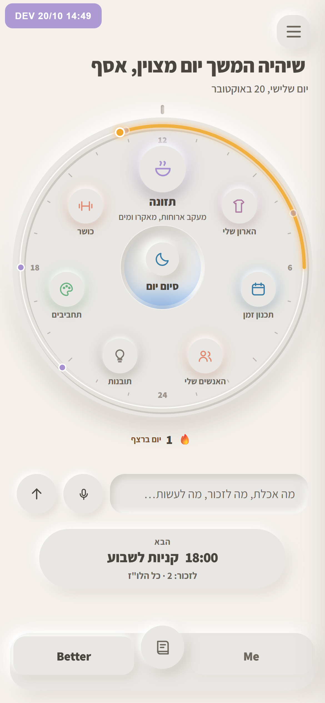
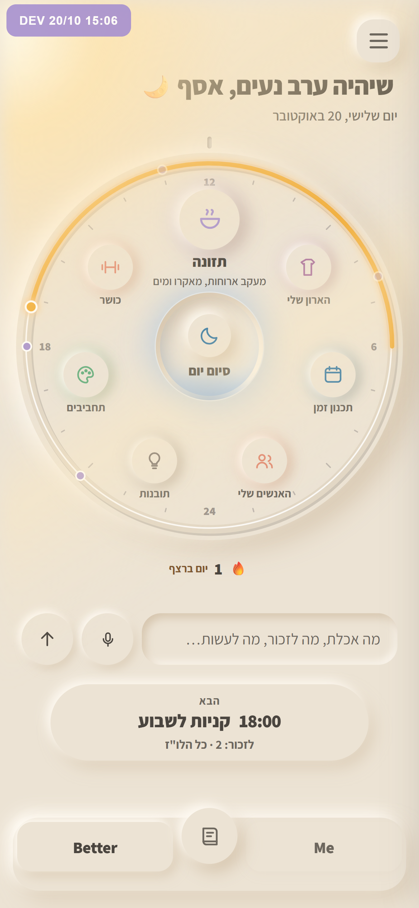
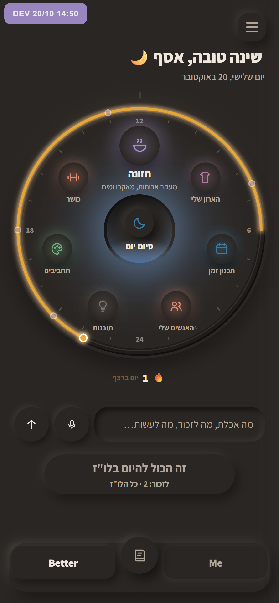

זה כבר בנוי: אותו מסך בארבע שעות
בוקר, צהריים ושעת הזהב מהדמדומים, והלילה מהפנסים. אלה צילומים של האפליקציה האמיתית, לא הדמיות. היא בנויה בצד, ו־dev עדיין לא השתנה. אם תאשר, אכניס אותה ל־dev.

04:00–11:00
בוקר
לבן. האור מגיע נמוך מהצד, והצללים ארוכים לצד השני.

11:00–16:00
צהריים
לבן. האור מגיע מלמעלה, והצללים קצרים וישרים למטה.

16:00–19:00
שעת הזהב
החומר מתחמם לגוון חול, קרן שמש נכנסת משמאל, והבאר מתחילה לזהור.

19:00–04:00
לילה
חדר כהה וחם. הבאר היא המנורה ואורה נשפך על החוגה, ובכל חלק דולק אור קטן בצבע שלו.
שני דברים שכדאי לדעת: בלילה הבאר נשארת כחולה ולא ענבר כמו בהדמיה, כי אור הענבר שמור. והחושך חל רק על המסך הראשי: כשנכנסים לחלק מסוים בלילה, הוא עדיין לבן.